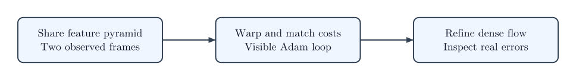
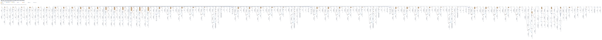
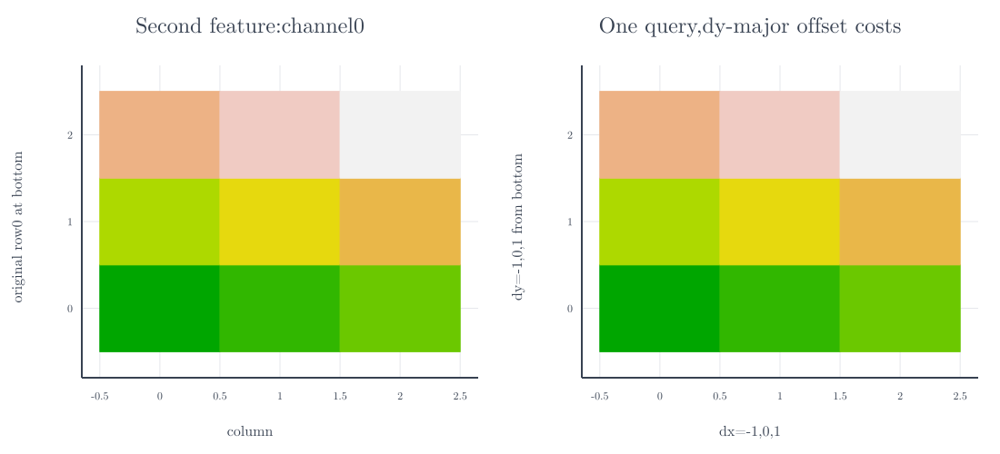
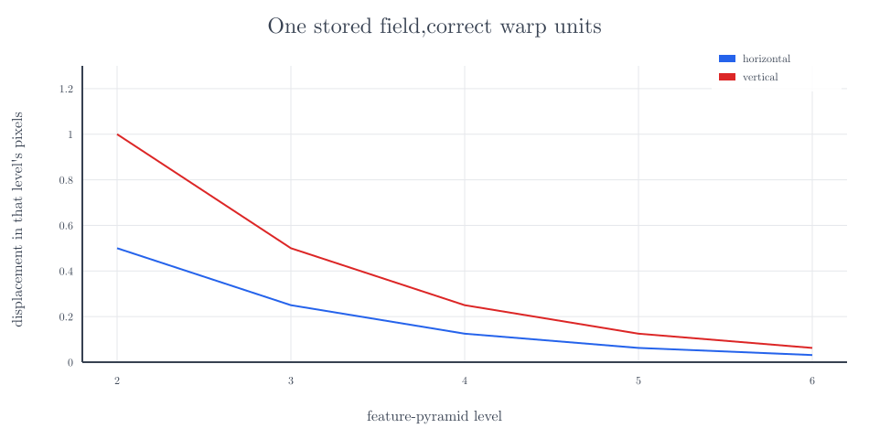
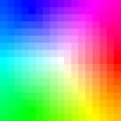
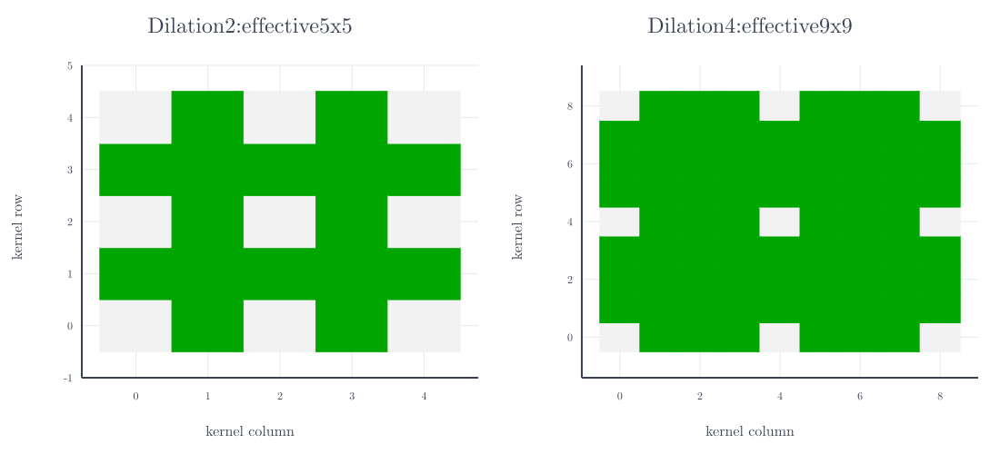
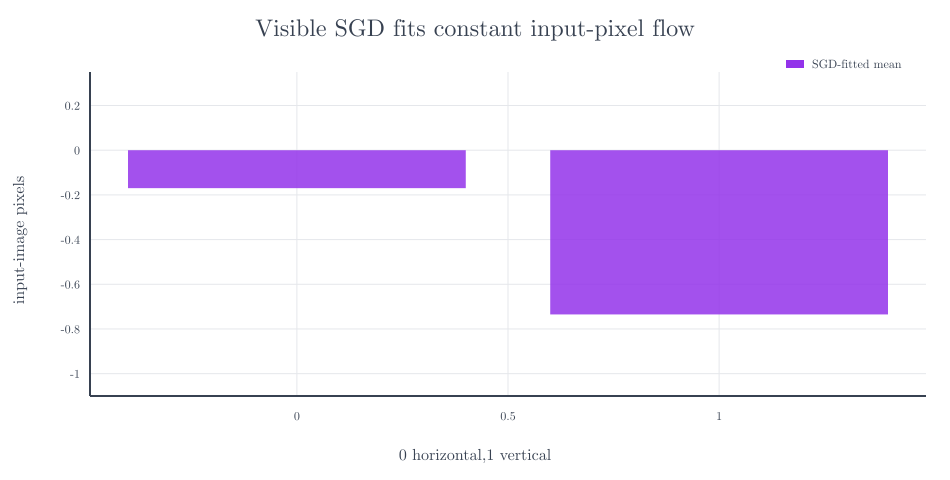
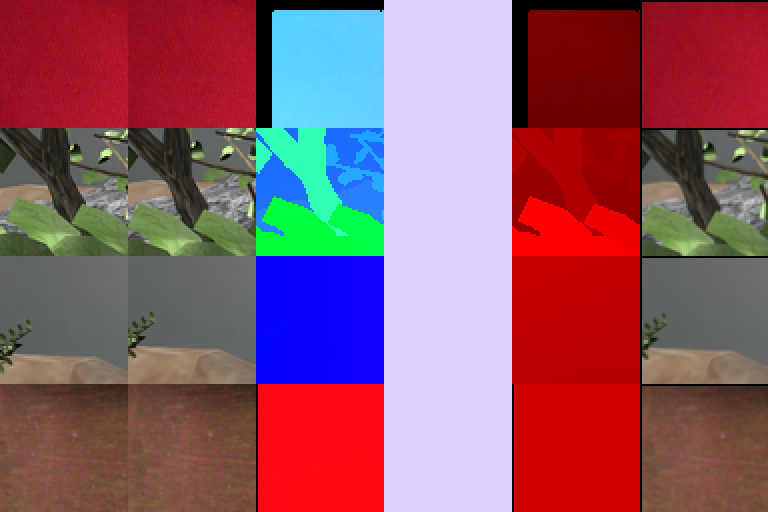
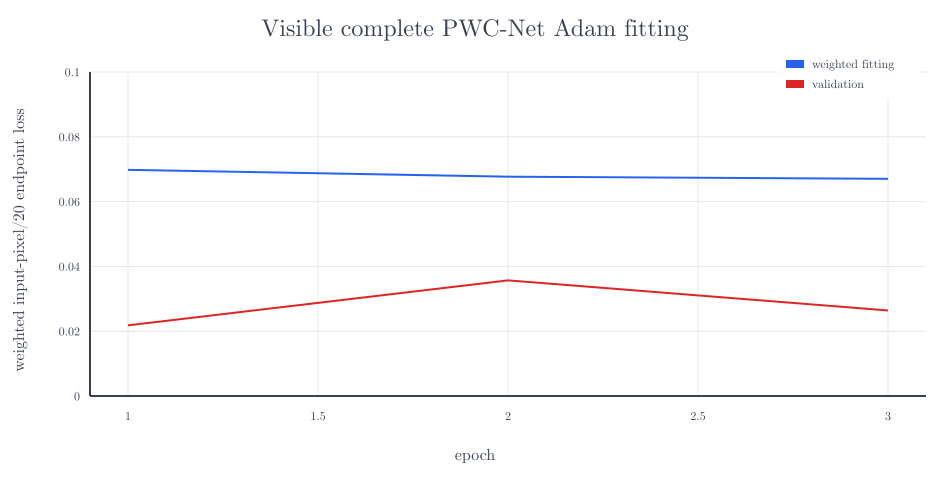
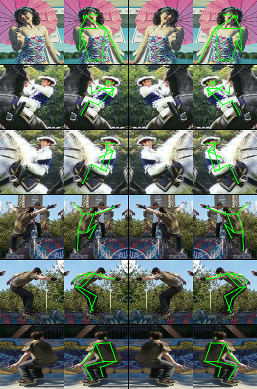

PWC-Net: shared pyramids and visible tensor flow fitting
Abstract
Two observed frames must identify motion despite weak texture and occlusion. PWC-Net narrows the search through shared pyramids,backward feature warping and local cost volumes. Hand correlations,warp units and dilated context precede full/compact graph checks,published Middlebury pairs,explicit SGD/Adam and immutable pair-only deployment,with every held-out motion error reported.
Source example: examples/cpp/source/nn/1_convolutional_neural_networks/1.8_other_vision_tasks/pwcnet.cpp.
The method
At each coarse-to-fine level,a shared feature extractor represents both frames. Current flow warps the second features before a radius4 correlation volume measures local matches. Dense estimators predict fixed input-pixel/20 flow;learned upflow/upfeature connect levels,and a dilated residual context refines the finest field. Only observed RGB enters forward inference.
The concept diagram below is drawn by dm::graphics::Diagram. Its editable C++
source is the complete block below; regeneration uses the same datamunge toolchain
as the numerical examples. Exports consume the saved local SVG.
#include <dm/dm.hpp>
int main() {
std::filesystem::create_directories("build");
dm::graphics::Diagram diagram;
diagram.node("n0", {0.0, 0}, "Share feature pyramid\nTwo observed frames");
diagram.node("n1", {5.2, 0}, "Warp and match costs\nVisible Adam loop");
diagram.node("n2", {10.4, 0}, "Refine dense flow\nInspect real errors");
diagram.edge("n0", "n1").edge("n1", "n2");
diagram.save_svg("build/pwcnet_concept.svg");
}
Executed tensor architecture
Cost-volume and warp blocks retain both executed feature/flow dependencies through
model_stage's multiple-input overload. This groups correlation displacements and
bilinear samples without hiding their branch inputs; detail=Operations expands
the same computation. No flow objective or optimizer is changed.
This figure executes the inference configuration shown in the code, using a zero-valued shape probe without fitting or loading a checkpoint. Named stage boundaries group whole subgraphs where available; other nodes retain functional-layer detail. Exact batch-inclusive shapes and reachable parameter totals come from the trace. Shared linear scales map spatial dimensions and channel counts to blocks; the one-pixel visibility floor is disclosed in the legend. Labels use compact monospace text, rotate counterclockwise and sit beside their own glyphs. Arrows flow left to right; wide diagrams scroll at native size on the website.
#include <dm/dm.hpp>
int main() {
namespace n = dm::nn;
namespace m = n::models;
n::set_num_threads(2);
std::filesystem::create_directories("build");
n::ParameterStore p(163);
n::Module architecture_model(
[&](const n::Tensor& image) {
return m::PWCNet(p, image, n::zeros({1, 64, 64, 3}), 64, 64, true).flow;
},
"PWC-Net: shared pyramids and visible tensor flow fitting");
n::ModelPlotOptions options;
options.style = n::ModelPlotStyle::Flow;
options.detail = n::ModelPlotDetail::Blocks;
options.labels = {.type = n::ModelPlotLabel::NameAndShape, .size = 12, .wrap = 24};
options.spacing = {.layer = 24, .lane = 12, .label = 8, .margin = 20};
options.sizing.spatial_size = 96;
options.sizing.channel_size = 42;
options.sizing.minimum_extent = 1;
options.opacity = .8;
const auto diagram = architecture_model.plot(n::zeros({1, 64, 64, 3}), options);
diagram.save_svg("build/pwcnet_architecture.svg");
std::print(
"{} displayed nodes; {} reachable learned values.\n",
diagram.nodes().size(),
diagram.parameter_count());
}418 displayed nodes; 410442 reachable learned values.

Local feature correlation is a cost volume
At one first-image location,the radius-r cost channel for offset(dy,dx) is
\(C=\operatorname{mean}_c[F_1(y,x,c)F_2(y+dy,x+dx,c)]\).
Channels enumerate dy first,then dx,from-r through r. Outside second-image
features are zero. PWC-Net uses r4,so each location has81 cost channels.
The hand example uses radius1 and a single query feature(2,1).
Second features are neighboring pairs(0,1),(2,3),...,(16,17),so its3x3
costs are[.5,.5,1.5;2.5,3.5,4.5;5.5,6.5,7.5]. Both feature branches
receive gradients;native tests check every coordinate at radius4 too.
#include <dm/dm.hpp>
int main() {
namespace n = dm::nn;
namespace m = n::models;
const auto first =
n::pad(n::tensor({2., -1.}, {1, 1, 1, 2}), {{0, 0}, {1, 1}, {1, 1}, {0, 0}}).requires_grad_();
const auto second = n::arange(0, 18).reshape({1, 3, 3, 2}).requires_grad_();
const auto cost = m::FlowCorrelation(first, second, 1);
const auto query = n::select(n::select(n::select(cost, 0, 0), 0, 1), 0, 1).reshape({3, 3});
const auto gradients = n::grad(n::sum(query), {first, second});
auto a = n::plot_tensor_map(n::reverse(n::select(n::select(second, 0, 0), 2, 0), {0}), 0, 16),
b = n::plot_tensor_map(n::reverse(query, {0}), -.5, 7.5);
a.title("Second feature:channel0").x_label("column").y_label("original row0 at bottom");
b.title("One query,dy-major offset costs").x_label("dx=-1,0,1").y_label("dy=-1,0,1 from bottom");
std::filesystem::create_directories("build");
auto layout = dm::graphics::RLayout::create(1, 2);
layout.add(a).add(b).size(1100, 500).fit_panels().save_svg("build/pwcnet_cost.svg");
const auto center =
n::select(n::select(n::select(gradients[0], 0, 0), 0, 1), 0, 1).to_vector<double>();
std::print(
"Query costs first/center/last {:.1f}/{:.1f}/{:.1f};query feature gradient "
"{:.1f}/{:.1f};radius4 has81 channels.\n",
query.to_vector<double>()[0],
query.to_vector<double>()[4],
query.to_vector<double>()[8],
center[0],
center[1]);
if (center[0] != 36. || center[1] != 40.5)
return 1;
}Query costs first/center/last -0.5/3.5/7.5;query feature gradient 36.0/40.5;radius4 has81 channels.

Warp in each pyramid’s own pixel coordinates
The current flow still stores *input-image pixels divided by20*. Before warping second-image features at level l,convert it by20/2^l. A stored(.1,.2) therefore means(2,4) input pixels,but only(.5,1) level2 pixels and (.03125,.0625) level6 pixels. Learned transpose upflow preserves stored input/20 values;it does not multiply displacement by2 when changing the grid.
#include <dm/dm.hpp>
int main() {
namespace n = dm::nn;
namespace m = n::models;
const auto field = n::tensor({.1, .2}, {1, 1, 1, 2});
std::vector<double> levels, dx, dy;
std::print("| level | horizontal level pixels | vertical level pixels |\n|---:|---:|---:|\n");
for (int level = 2; level <= 6; ++level) {
const auto values = m::FlowPyramidPixels(field, level).to_vector<double>();
levels.push_back(level);
dx.push_back(values[0]);
dy.push_back(values[1]);
std::print("| {} | {:.6f} | {:.6f} |\n", level, values[0], values[1]);
}
const auto x = n::arange(-4., 4.01, .5).reshape({1, 1, 17, 1}) + n::zeros({1, 17, 1, 1}),
y = n::arange(-4., 4.01, .5).reshape({1, 17, 1, 1}) + n::zeros({1, 1, 17, 1});
std::filesystem::create_directories("build");
std::filesystem::create_directories("figures");
n::save_image_grid(
m::FlowColors(n::concat({x, y}, 3)).to(n::DType::Float32),
"build/pwcnet_direction.png",
1,
0,
1,
0,
0,
12);
auto p = dm::graphics::RPlot::create();
p.lines(levels, dx, "horizontal", {37, 99, 235})
.lines(levels, dy, "vertical", {220, 38, 38})
.title("One stored field,correct warp units")
.x_label("feature-pyramid level")
.y_label("displacement in that level's pixels")
.y_limits(0, 1.3)
.size(950, 480);
p.save_svg("build/pwcnet_units.svg");
}| level | horizontal level pixels | vertical level pixels |
|---|---|---|
| 2 | 0.500000 | 1.000000 |
| 3 | 0.250000 | 0.500000 |
| 4 | 0.125000 | 0.250000 |
| 5 | 0.062500 | 0.125000 |
| 6 | 0.031250 | 0.062500 |


Dilated context adds reach without inventing learned taps
After dense estimation at level2,a seven-layer context residual uses dilation rates1,2,4,8,16,1,1. Portable tensor expansion inserts zeros between the nine learned3x3 taps;it retains a differentiable mapping to every original tap. Dilation2 gives a5x5 effective kernel,and dilation4 gives9x9,each with nine learned locations. Native signed-convolution oracles cover all values and input/kernel derivatives through rates1,2,4,8 and16.
#include <dm/dm.hpp>
int main() {
namespace n = dm::nn;
const auto kernel = n::ones({3, 3, 1, 1}).requires_grad_();
const auto two = n::expand_dilated_kernel(kernel, 2), four = n::expand_dilated_kernel(kernel, 4);
const auto gradient = n::grad(n::sum(two) + n::sum(four), {kernel})[0];
auto a = n::plot_tensor_map(n::reverse(two.reshape({5, 5}), {0}), 0, 1),
b = n::plot_tensor_map(n::reverse(four.reshape({9, 9}), {0}), 0, 1);
a.title("Dilation2:effective5x5").x_label("kernel column").y_label("kernel row");
b.title("Dilation4:effective9x9").x_label("kernel column").y_label("kernel row");
std::filesystem::create_directories("build");
auto layout = dm::graphics::RLayout::create(1, 2);
layout.add(a).add(b).size(1100, 500).fit_panels().save_svg("build/pwcnet_context.svg");
std::print(
"Nine learned taps in each expansion;gradient of summed two expansions is2 at "
"all nine taps,max error {:.3g}.\n",
n::max(n::abs(gradient - 2.)).item());
}Nine learned taps in each expansion;gradient of summed two expansions is2 at all nine taps,max error 0.

Full and compact shared-pyramid graphs
Both input frames pass through the same18 learned feature convolutions,not two independently fitted extractors. Their branch gradients add into the same leaves. Coarsest costs start at level6;levels5 through2 warp the second features,then concatenate costs,first features,learned upflow and two-channel upfeature. Five densely connected convolutions at every level predict flow. The final dilated context is a residual correction to level2.
The graph has no BN or joint image centering. Explicit fan-in Gaussian initialization uses9*Cin for3x3 and16*Cin for transposes,including their [4,4,Cout,Cin] layout. Compact channels retain all67 exposed stages and126 learned tensors. The full teaching graph is executed too;no pretrained or published-quality equivalence is implied by retaining its connectivity.
#include <dm/dm.hpp>
int main() {
namespace n = dm::nn;
namespace m = n::models;
n::set_num_threads(2);
std::print(
"| graph | learned scalars | learned tensors | stages | shared feature leaves "
"|\n|---|---:|---:|---:|---:|\n");
for (bool compact : {false, true}) {
n::ParameterStore p(163);
const auto first = (.5 + .4 * n::sin(n::arange(0, 2 * 64 * 64 * 3, 1, n::DType::Float64) * .17))
.to(n::DType::Float32)
.reshape({2, 64, 64, 3})
.requires_grad_(),
second =
(.5 + .4 * n::cos(n::arange(0, 2 * 64 * 64 * 3, 1, n::DType::Float64) * .13))
.to(n::DType::Float32)
.reshape({2, 64, 64, 3})
.requires_grad_();
const auto out = m::PWCNet(p, first, second, 64, 64, compact);
n::Tensor loss;
for (const auto& level : out.pyramid)
loss = loss.defined() ? loss + n::mean(n::square(level)) : n::mean(n::square(level));
auto leaves = p.parameters();
leaves.push_back(first);
leaves.push_back(second);
const auto gradients = n::grad(loss, leaves, {true});
for (const auto& g : gradients)
if (!n::all(n::less(n::abs(g), INFINITY)).item<bool>() ||
(compact && n::sum(n::square(g.to(n::DType::Float64))).item() <= 0))
return 1;
int shared = 0;
for (const auto& name : p.names())
shared += name.starts_with("pyramid/");
if (p.size() != 126 || shared != 36 || out.stages.size() != 67)
return 1;
if (compact) {
const auto weight = p.parameters()[0], a = n::mean(n::square(out.stages[5])),
b = n::mean(n::square(out.stages[11]));
const auto ga = n::grad(a, {weight}, {true})[0], gb = n::grad(b, {weight}, {true})[0],
sum = n::grad(a + b, {weight})[0];
if (n::max(n::abs(sum - ga - gb)).item() > 1e-8)
return 1;
}
std::print(
"| {} | {} | {} | {} | {} |\n",
compact ? "compact" : "full",
p.count(),
p.size(),
out.stages.size(),
shared);
}
}| graph | learned scalars | learned tensors | stages | shared feature leaves |
|---|---|---|---|---|
| full | 9374274 | 126 | 67 | 36 |
| compact | 410442 | 126 | 67 | 36 |
Actual published pairs and an explicit SGD reference
Use the same reproducible Middlebury preparation as FlowNetS. Place the
official frame-pair and GT ZIP files in build/cnn-datasets/optical_flow,then
run from the repository root:
#include <dm/dm.hpp>
int main() {
const std::filesystem::path cache = dm::datasets::data_home();
dm::datasets::prepare_example_data("optical_flow", (cache / "optical_flow").string());
}The pinned frame/GT SHA256 values are
dc7afbab15a7da40b52d633f825191bf693e227320bb624546ed9f2f8d668e50 and
e967b729cc47a493b3226515e0172224e503f7b14a54f97660f8d5f745632ab9.
Raw little-endian flow ingress and tensor finite/abs<1e9 validity preserve
published ground truth. Original RGB is divided by255;neither images nor
flow are resized. A predetermined5x5 tensor origin grid selects the first
eight unique64px crops per scene with>409 valid samples. The manifest retains
all scene IDs,families,dimensions and crop coordinates. This is a fresh
custom subset,not the old external archive or official evaluation.
Fit:Dimetrodon,Grove2,Grove3,Hydrangea(32 crops,three families). Validation:RubberWhale(eight crops,one family). Test:Urban2,Urban3,Venus(24 crops,two families). Related Grove and Urban scenes stay together. Crops overlap within a scene,so test represents three source pairs. The source data include photographed and rendered imagery.
Fit the two-coordinate constant reference with one visible SGD(.5) step on summed masked-coordinate MSE. An independent tensor mean checks its result. This baseline is fitted only on training families;zero flow has no parameters.
#include <dm/dm.hpp>
int main() {
namespace n = dm::nn;
namespace m = n::models;
n::set_num_threads(2);
std::filesystem::path cache;
if (const auto* p = std::getenv("DATAMUNGE_DATA_DIR"))
cache = p;
else if (const auto* p = std::getenv("XDG_CACHE_HOME"))
cache = std::filesystem::path(p) / "datamunge/datasets";
else
cache = std::filesystem::path(std::getenv("HOME")) / ".cache/datamunge/datasets";
std::filesystem::path root = cache / "optical_flow";
if (const auto* p = std::getenv("DATAMUNGE_FLOW_DIR"))
root = p;
else
dm::datasets::prepare_example_data("optical_flow", root.string());
const auto split = m::LoadFlowPairs(root);
n::ParameterStore constant(173, n::DType::Float64);
const auto q = constant.get("flow", {2}, n::init::zeros());
n::OptimizerConfig opt;
opt.kind = n::OptimizerKind::Sgd;
n::Optimizer sgd(constant, .5, opt);
const auto target = split.fit.flow.to(n::DType::Float64),
mask = split.fit.valid.to(n::DType::Float64);
for (int step = 0; step < 1; ++step) {
const auto loss = n::sum(
n::sum(mask * n::square(q.reshape({1, 1, 1, 2}) - target), {0, 1, 2}) / n::sum(mask));
sgd.minimize(loss);
}
const auto fitted = q.detach().to(n::DType::Float32);
const auto closed = m::FitMeanFlow(split.fit);
const auto expected =
n::from_vector(std::vector<double>{closed[0], closed[1]}, {2}).to(n::DType::Float32);
const double parity = n::max(n::abs(fitted - expected)).item();
if (parity > 1e-8)
return 1;
const auto first = m::FlowBatch(split.fit, {0, 8, 16, 24});
const auto reference = n::ones(first.flow.shape()) * fitted.reshape({1, 1, 1, 2});
const auto warped = m::FlowWarp(first.second, reference).value;
std::filesystem::create_directories("build");
std::filesystem::create_directories("figures");
n::save_npz("build/pwcnet_prior.npz", {{"flow", fitted}});
n::save_image_grid(
m::FlowPreviewTiles(first, reference, warped), "build/pwcnet_inputs.png", 1, 0, 1, 0, 0, 2);
auto plot = dm::graphics::RPlot::create();
plot.bars({0., 1.}, fitted.to_vector<double>(), "SGD-fitted mean", {147, 51, 234})
.title("Visible SGD fits constant input-pixel flow")
.x_label("0 horizontal,1 vertical")
.y_label("input-image pixels")
.y_limits(-1.1, .35)
.size(950, 480);
plot.save_svg("build/pwcnet_prior.svg");
std::print(
"One SGD(.5) update;mean oracle parity {:.3g};dx/dy {:.6f}/{:.6f}px.\n| split | "
"crops | scenes | related families | GT pixels |\n|---|---:|---:|---:|---:|\n",
parity,
fitted.to_vector<double>()[0],
fitted.to_vector<double>()[1]);
const std::vector<std::pair<std::string, m::FlowData>> splits = {
{"fit", split.fit}, {"validation", split.validation}, {"test", split.test}};
for (const auto& item : splits) {
const auto scenes = item.second.scene_ids.to_vector<int>(),
families = item.second.family_ids.to_vector<int>();
std::print(
"| {} | {} | {} | {} | {} |\n",
item.first,
item.second.first.size(0),
std::set<int>(scenes.begin(), scenes.end()).size(),
std::set<int>(families.begin(), families.end()).size(),
n::count_nonzero(item.second.valid).item<std::int64_t>());
}
}One SGD(.5) update;mean oracle parity 0;dx/dy -0.169839/-0.734982px.
| split | crops | scenes | related families | GT pixels |
|---|---|---|---|---|
| fit | 32 | 4 | 3 | 127839 |
| validation | 8 | 1 | 1 | 32338 |
| test | 24 | 3 | 2 | 98304 |


Visible complete-model Adam and pair-only restoration
Warm all126 leaves before Adam(.001). Three epochs,two-image batches and source seed167 give48 explicit updates. Five mean valid-block GT levels remain in input pixels/20. Smooth endpoint losses use weights .005,.01,.02,.08,.32. Validation selects the parameter checkpoint;there is no BN state. The inference call receives only first and second RGB frames.
Restore an independent store,check every leaf remains immutable and verify single/batch and repeated predictions. Compare every test crop with initial weights,zero and the saved SGD constant. Endpoint and augmented angular metrics average supported images equally. Bad1/bad3 use strict>1/>3px,and Fl-all also requires>5% of true magnitude. Report source-pair errors separately.
#include <dm/dm.hpp>
int main() {
namespace n = dm::nn;
namespace m = n::models;
n::set_num_threads(2);
std::filesystem::path cache;
if (const auto* p = std::getenv("DATAMUNGE_DATA_DIR"))
cache = p;
else if (const auto* p = std::getenv("XDG_CACHE_HOME"))
cache = std::filesystem::path(p) / "datamunge/datasets";
else
cache = std::filesystem::path(std::getenv("HOME")) / ".cache/datamunge/datasets";
std::filesystem::path root = cache / "optical_flow";
if (const auto* p = std::getenv("DATAMUNGE_FLOW_DIR"))
root = p;
else
dm::datasets::prepare_example_data("optical_flow", root.string());
const auto split = m::LoadFlowPairs(root);
const m::FlowPrepared fit{split.fit, m::PrepareFlowSupervision(split.fit)},
validation{split.validation, m::PrepareFlowSupervision(split.validation)};
n::ParameterStore p(163);
{
n::NoGradGuard guard;
m::PWCNet(p, n::zeros({1, 64, 64, 3}), n::zeros({1, 64, 64, 3}), 64, 64, true);
}
n::OptimizerConfig config;
config.kind = n::OptimizerKind::Adam;
n::Optimizer adam(p, .001, config);
auto predict = [](n::ParameterStore& weights, const m::FlowData& d) {
n::NoGradGuard guard;
std::vector<n::Tensor> parts;
for (std::int64_t i = 0; i < d.first.size(0); i += 2)
parts.push_back(
m::PWCNet(
weights,
n::slice_axis(d.first, 0, i, std::min(i + 2, d.first.size(0))),
n::slice_axis(d.second, 0, i, std::min(i + 2, d.second.size(0))),
64,
64,
true)
.flow);
return n::concat(parts, 0);
};
auto objective = [&](const m::FlowPrepared& data) {
n::NoGradGuard guard;
double total = 0;
for (std::int64_t i = 0; i < data.data.first.size(0); i += 2) {
const auto batch = m::FlowBatch(data, {std::size_t(i), std::size_t(i + 1)});
total += m::FlowObjective(
m::PWCNet(p, batch.data.first, batch.data.second, 64, 64, true),
batch.target.flow,
batch.target.valid)[0]
.item() *
2.;
}
return total / data.data.first.size(0);
};
const auto initial_prediction = predict(p, split.test);
const auto probe = m::FlowBatch(fit, {0, 1});
const double initial = objective(probe);
n::BatchOrder order(32, 2, 167);
std::vector<double> epochs, training, valid;
double best = INFINITY;
int selected = 0, updates = 0;
std::filesystem::create_directories("build");
std::filesystem::create_directories("figures");
std::print(
"410442 learned scalars/126 warmed leaves,no BN.\n| epoch | weighted fit | L2 | "
"L3 | L4 | L5 | L6 | validation |\n|---:|---:|---:|---:|---:|---:|---:|---:|\n");
for (int epoch = 1; epoch <= 3; ++epoch) {
order.begin_epoch();
std::array<double, 6> sums{};
int seen = 0;
for (auto ids = order.next(); !ids.empty(); ids = order.next()) {
const auto batch = m::FlowBatch(fit, std::vector<std::size_t>(ids.begin(), ids.end()));
const auto forward = m::PWCNet(p, batch.data.first, batch.data.second, 64, 64, true);
const auto losses = m::FlowObjective(forward, batch.target.flow, batch.target.valid);
for (std::size_t i = 0; i < 6; ++i) {
if (!std::isfinite(losses[i].item()))
return 1;
sums[i] += losses[i].item() * ids.size();
}
seen += ids.size();
adam.minimize(losses[0]);
++updates;
}
if (seen != 32)
return 1;
for (auto& value : sums)
value /= seen;
epochs.push_back(epoch);
training.push_back(sums[0]);
valid.push_back(objective(validation));
if (valid.back() < best) {
best = valid.back();
selected = epoch;
p.save("build/pwcnet_best.npz");
}
std::print(
"| {} | {:.6f} | {:.6f} | {:.6f} | {:.6f} | {:.6f} | {:.6f} | {:.6f} |\n",
epoch,
sums[0],
sums[1],
sums[2],
sums[3],
sums[4],
sums[5],
valid.back());
}
p.load("build/pwcnet_best.npz");
const double restored = objective(validation), learned_probe = objective(probe);
if (std::abs(restored - best) > 1e-8 || learned_probe >= initial ||
training.back() >= training.front())
return 1;
n::ParameterStore deployed(991);
{
n::NoGradGuard guard;
m::PWCNet(deployed, n::zeros({1, 64, 64, 3}), n::zeros({1, 64, 64, 3}), 64, 64, true);
}
deployed.load("build/pwcnet_best.npz");
std::vector<n::Tensor> snapshot;
for (const auto& v : deployed.parameters())
snapshot.push_back(v.clone());
const auto prediction = predict(deployed, split.test), reference = predict(p, split.test),
repeat = predict(deployed, split.test);
const double parity = n::max(n::abs(prediction - reference)).item();
if (parity > 1e-7 || !n::all(n::equal(prediction, repeat)).item<bool>())
return 1;
const auto single = predict(deployed, m::FlowBatch(split.test, {3}));
if (n::max(n::abs(single - n::slice_axis(prediction, 0, 3, 4))).item() > 1e-6)
return 1;
for (std::size_t i = 0; i < snapshot.size(); ++i)
if (!n::all(n::equal(snapshot[i], deployed.parameters()[i])).item<bool>())
return 1;
auto changed = split.test;
changed.second = n::zeros_like(changed.second);
const double sensitivity = n::mean(n::abs(prediction - predict(deployed, changed))).item();
if (sensitivity <= 1e-6)
return 1;
const auto fitted = n::load_npz("build/pwcnet_prior.npz").at(0).second;
const auto constant = n::ones(split.test.flow.shape()) * fitted.reshape({1, 1, 1, 2});
const auto learned = m::ScoreTensorFlow(prediction, split.test.flow, split.test.valid),
untrained = m::ScoreTensorFlow(initial_prediction, split.test.flow, split.test.valid),
zero =
m::ScoreTensorFlow(n::zeros_like(prediction), split.test.flow, split.test.valid),
prior = m::ScoreTensorFlow(constant, split.test.flow, split.test.valid);
std::print(
"{} visible Adam updates;selected epoch{},restored validation {:.6f};fixed fitting "
"weighted loss {:.6f}->{:.6f}.\nPair-only deployment parity {:.3g};all126 tensors "
"immutable,repeat exact,single/batch agree;second-image sensitivity {:.6f}px.\n| model "
"| EPE px | AAE degrees | bad1 | bad3 | Fl-all |\n|---|---:|---:|---:|---:|---:|\n",
updates,
selected,
restored,
initial,
learned_probe,
parity,
sensitivity);
for (const auto& item : std::vector<std::pair<std::string, m::TensorFlowMetrics>>{
{"learned", learned}, {"initial", untrained}, {"zero", zero}, {"SGD constant", prior}})
std::print(
"| {} | {:.6f} | {:.6f} | {:.6f} | {:.6f} | {:.6f} |\n",
item.first,
item.second.epe.item(),
item.second.aae.item(),
item.second.bad1.item(),
item.second.bad3.item(),
item.second.fl_all.item());
std::vector<double> scene_epe;
std::print(
"\nErrors by held-out source pair.\n\n| test source pair | crops | learned EPE "
"px |\n|---|---:|---:|\n");
const std::vector<std::string> scene_names = {"Urban2", "Urban3", "Venus"};
for (int scene = 0; scene < 3; ++scene) {
const auto first = scene * 8;
const auto metric = m::ScoreTensorFlow(
n::slice_axis(prediction, 0, first, first + 8),
n::slice_axis(split.test.flow, 0, first, first + 8),
n::slice_axis(split.test.valid, 0, first, first + 8));
scene_epe.push_back(metric.epe.item());
std::print("| {} | 8 | {:.6f} |\n", scene_names[scene], metric.epe.item());
}
const auto warped = m::FlowWarp(split.test.second, prediction).value;
n::save_image_grid(
m::FlowPreviewTiles(split.test, prediction, warped),
"build/pwcnet_predictions.png",
2,
0,
1,
0,
0,
2);
n::save_npz(
"build/pwcnet_test.npz",
{{"prediction", prediction},
{"truth", split.test.flow},
{"valid", split.test.valid},
{"warped_second", warped}});
auto a = dm::graphics::RPlot::create(), b = dm::graphics::RPlot::create();
a.bars(
{0., 1., 2., 3.},
{learned.epe.item(), untrained.epe.item(), zero.epe.item(), prior.epe.item()},
"EPE",
{37, 99, 235})
.title("All24 held-out crop errors")
.x_label("0 CNN,1 init,2 zero,3 SGD")
.y_label("mean per-image EPE in input pixels")
.y_limits(0, 6);
b.bars({0., 1., 2.}, scene_epe, "scene EPE", {22, 163, 74})
.title("Three source pairs remain distinct")
.x_label("0 Urban2,1 Urban3,2 Venus")
.y_label("mean EPE over eight crops")
.y_limits(0, 8);
auto metrics = dm::graphics::RLayout::create(1, 2);
metrics.add(a).add(b).size(1100, 480).fit_panels().save_svg("build/pwcnet_metrics.svg");
std::filesystem::copy_file(
"build/pwcnet_metrics.svg",
"figures/pwcnet_metrics.svg",
std::filesystem::copy_options::overwrite_existing);
a = dm::graphics::RPlot::create();
a.lines(epochs, training, "weighted fitting", {37, 99, 235})
.lines(epochs, valid, "validation", {220, 38, 38})
.title("Visible complete PWC-Net Adam fitting")
.x_label("epoch")
.y_label("weighted input-pixel/20 endpoint loss")
.y_limits(0, .1)
.size(950, 480);
a.save_svg("build/pwcnet_training.svg");
}410442 learned scalars/126 warmed leaves,no BN.
| epoch | weighted fit | L2 | L3 | L4 | L5 | L6 | validation |
|---|---|---|---|---|---|---|---|
| 1 | 0.069799 | 0.171468 | 0.167380 | 0.158362 | 0.160053 | 0.160302 | 0.021812 |
| 2 | 0.067691 | 0.161961 | 0.160107 | 0.155129 | 0.151326 | 0.156474 | 0.035689 |
| 3 | 0.067031 | 0.157462 | 0.158331 | 0.155948 | 0.152501 | 0.154191 | 0.026394 |
48 visible Adam updates;selected epoch1,restored validation 0.021812;fixed fitting weighted loss 0.050475->0.043961. Pair-only deployment parity 0;all126 tensors immutable,repeat exact,single/batch agree;second-image sensitivity 0.020685px.
| model | EPE px | AAE degrees | bad1 | bad3 | Fl-all |
|---|---|---|---|---|---|
| learned | 3.946422 | 69.408405 | 0.861766 | 0.700714 | 0.700714 |
| initial | 4.370310 | 72.264424 | 0.861481 | 0.652730 | 0.652730 |
| zero | 3.916913 | 67.942204 | 0.853933 | 0.701772 | 0.701772 |
| SGD constant | 4.174930 | 79.984316 | 0.973663 | 0.650614 | 0.650614 |
Errors by held-out source pair.
| test source pair | crops | learned EPE px |
|---|---|---|
| Urban2 | 8 | 2.412559 |
| Urban3 | 8 | 4.198488 |
| Venus | 8 | 5.228220 |



Use all five aggregate metrics and the per-scene rows together. A lower average endpoint error need not imply a lower outlier fraction. Zero flow and the fitting-only constant remain useful controls, while the three source scenes reveal variation hidden by one average. This short fit does not establish a broad motion-quality gain.
Pyramid sharing,warp/cost geometry and complete gradients establish the mechanism;they do not establish useful motion quality after a short fit. No pretrained weights,FlyingChairs training,online augmentation or official benchmark claim is made. Actual errors and zero/constant references keep the source-family transfer limits visible.
Regenerate adjacent views from this run
#include <dm/dm.hpp>
int main() {
std::filesystem::copy_file(
"build/pwcnet_direction.png",
"build/export_pwcnet_direction.png",
std::filesystem::copy_options::overwrite_existing);
}#include <dm/dm.hpp>
int main() {
std::filesystem::copy_file(
"build/pwcnet_inputs.png",
"build/export_pwcnet_inputs.png",
std::filesystem::copy_options::overwrite_existing);
}#include <dm/dm.hpp>
int main() {
std::filesystem::copy_file(
"build/pwcnet_metrics.svg",
"build/export_pwcnet_metrics.svg",
std::filesystem::copy_options::overwrite_existing);
}#include <dm/dm.hpp>
int main() {
std::filesystem::copy_file(
"build/pwcnet_predictions.png",
"build/export_pwcnet_predictions.png",
std::filesystem::copy_options::overwrite_existing);
}Conclusion
Tensor cost-volume derivatives,correct per-level warp units and portable dilated context establish the local mechanisms. Full connectivity and shared-gradient checks precede visible multiscale fitting on published targets. Independent pair-only restoration is immutable;actual field/warp errors and simple references delimit this short custom experiment.
References
- [Sun et al.(2018),PWC-Net:CNNs for Optical Flow Using Pyramid,Warping,and Cost Volume](https://arxiv.org/abs/1709.02371).
- [Author PWC-Net graph](https://github.com/NVlabs/PWC-Net/blob/master/PyTorch/models/PWCNet.py).
- [Middlebury public optical-flow data](https://vision.middlebury.edu/flow/data/).
- [Baker et al.(2011),A Database and Evaluation Methodology for Optical Flow](https://vision.middlebury.edu/flow/floweval-ijcv2011.pdf).